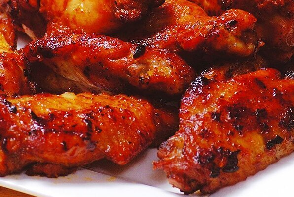

Caramelized Chicken Wings

Description
Yummy chicken wings that are so easy to fix on the stove top or in an electric skillet.
Ingredients
- 1 cup water
- ½ cup white sugar
- ⅓ cup soy sauce
- 2 tablespoons peanut butter
- 1 tablespoon honey
- 2 teaspoons wine vinegar
- 1 tablespoon minced garlic
- 12 large chicken wings, tips removed and wings cut in half at joint
- 1 teaspoon sesame seeds, or to taste
Steps
- In an large skillet over medium heat, mix together the water, sugar, soy sauce, peanut butter, honey, wine vinegar, and garlic until smooth and the sugar has dissolved.
- Place the wings into the sauce, cover, and simmer for 30 minutes.
- Uncover and simmer until the wings are tender and the sauce has thickened, about 30 more minutes, spooning sauce over wings occasionally.
- Sprinkle with sesame seeds.